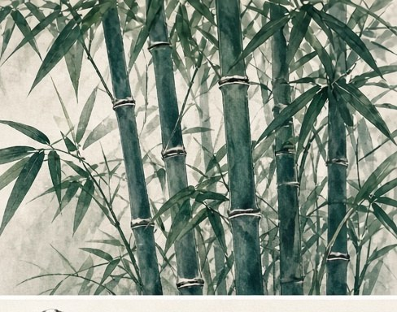

他们来自不同的城市与背景，因古琴而相聚。
上海松江人，自幼饱读诗书，文理皆通。本科毕业于上海交通大学，后入复旦大学哲学研究生班，于传统文化用力尤深、见解独到。琴学启蒙于龚一先生弟子高宇老师，后得广陵派戴晓莲、川派丁承运两位名家悉心指点。现任澳大利亚中国琴会会长，琴风沉稳厚重而不失灵动，专注丝弦琴，尤钟情《潇湘水云》《离骚》《幽兰》《广陵散》诸操。
师承浙派徐门古琴，现随龙生先生于墨尔本分社习琴授业。
旅澳青年古琴艺术家，浙派徐门古琴墨尔本分社副社长，中国乐器协会古琴研究会会员、浙江省音乐家协会会员、中国琴会会员。2018 年起致力于中国古琴文化在墨尔本的传播与推广，多次于国际文化交流活动及音乐会上演奏、讲解古琴。曾受邀出席 2022 年第 17 届巴拿马世界华人春晚及艺术博览会，获巴拿马共和国文旅部授予"金艺奖"；后于中、澳两地发起中英文古琴公益讲座数十余场，2023 年获评"中国艺术名家、传承创新文化榜样"。
汪铎先生嫡孙，自幼相伴祖父，耳濡目染，好古习琴，勤承家学。尤喜丝弦古琴，受祖父影响亦偏爱道家琴曲，追求清静自然、虚淡冲和之境。秉持"琴乃君子之道器"的琴学观，习琴所重不止于指法声律，更在琴曲所寄之意与操守。现致力于家传琴学、丝弦古琴及传统琴曲文化的研习与传播。
启蒙于已故山西琴家南林旺先生，后师从赵晓霞、陈璨等李祥霆一脉琴家。
操琴二十年，早年跟随四川琴家胡济璋、寇文犀夫妇习琴，后拜入"琴坛圣手"魏胜宝门下。曲风飒爽，不拘泥固定门派，常以情入境，极具个人风格；因古典音乐教育背景，擅长将琴之古韵与其他东西方器乐相融合。